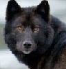
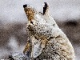
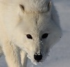

Canis Lupus
Canis Lupus, or otherwise known as the Wolf.
Canis latrans
Canis latrans, or otherwise known as the Coyote
Canis familiaris
Domesticated Dogs
Canis lupus ligoni
the Alexander Archipelago Wolf
Canis latrans latrans
the Plains Coyote
Great Dane
World's Largest Dog

Canis lupus arctos
the Arctic Wolf
Canis latrans dickeyi
El Salvador Coyote

Chihuahua
World's Smallest Dog